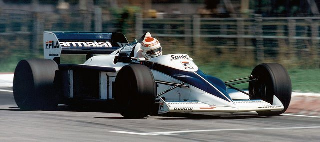

1.BMW выпустил двигатель для самолёта Красного Барона во время Первой мировой войны
Существовала огромная нехватка двигателей, особенно на стороне Германии и её союзников. На волне этого слились две
Небольшие компании – Рапп Мотор и Отто Верке. Второй в тот момент управлял сын человека, который нашёл способ практического
Применения четырёхтактного двигателя. В конечном итоге он стал использоваться почти на каждом автомобиле. Двигатель для самолёта
Знаменитого лётчика-аса Манфреда фон Рихтгофена по прозвищу «Красный Барон» так же был четырёхтактным.
2.Современная штаб-квартира BMW выполнена в виде четырёх цилиндров
Что является данью уважения к техническому новшеству, благодаря которому предприятия получило путёвку в жизнь.
3.Первые выпущенные агрегаты – авиационные двигатели – улучшили многие рекорды мира
Тут есть не только множество рекордов в скорости. В частности, с помощью двигателя BMW
Удалось совершить кругосветное путешествие на катере на воздушной подушке, а в 1919 году
Был обновлён рекорд высоты – тогда биплан с силовой установкой BMW сумел подняться на 9753
Метра. Примерно на такой высоте сегодня летают почти все пассажирские самолёты.
4.Все думают, что узнаваемая эмблема изображает крутящийся пропеллер. Все ошибаются
Вопреки распространённому мнению, аналогию с пропеллером просто придумали чуть позже и
Изобразили на одном из плакатов – блестящий образец талантливой рекламы.
5.В действительности, это просто сочетание эмблемы Рапп Мотор и символики Баварии
Да, на пропеллер это похоже, но ещё раз: просто удачный плакат и ничего более.
6.Можете поблагодарить Версальский мирный договор, которым окончилась Первая мировая
Именно это подтолкнуло BMW к автоиндустрии. После проигрыша в войне Германии было
Запрещено производить военные самолёты и двигатели к ним. Пришлось диверсифицировать всё –
Начали выпускать машины и мотоциклы.
7.Они даже не разрабатывали дизайн своего первого авто – Dixi
На самом деле, это была лишь копия английского Остина. В США же, например, была своя копия –
Бэнтэм, а в Японии – Датсун. Англичане разработали шасси, а другие производители решили
Просто купить лицензию и не париться с собственными разработками. Несмотря на это, немецкий
Вариант Остина был намного лучше своих «братьев» из других стран мира.
8.В 1937 году на мотоцикле BMW был установлен мировой рекорд скорости
Да, эта двухколёсная штука была смертельной. Как предполагалось останавливаться в аварийной
Ситуации и при этом не обезглавливать себя? Об этом не слишком думали, главное – рекорд!
Тогда мотоцикл полностью закрыли кузовом для большей аэродинамики. Цифры рекорда – 279,54
км/ч.
9.BMW был на передовой аэродинамики с момента появления самого термина
Их модель 1940-го 328 Камм Купе названа в честь отца всей немецкой аэродинамики –
Вунибальда Камма. Тогда этот автомобиль на десятки лет опередил своё время. Много позже их
Разработки начнут применять по всему миру. Принципы формирования задней части кузова
Используются до сих пор при разработке Корветтов.
10.BMW также был впереди в области мотогонок
BMW не изобрёл способ вхождения в поворот, при котором второй член экипажа высовывается
Наружу, чтобы улучшить вхождения в поворот – этот способ так же стар, как и сами гонки на
Мотоциклах c коляской. Однако баварцы сумели найти совершенно безумных исполнителей – вы
Только посмотрите! У этого безумца даже нет нормального шлема для защиты лица, только очки.
11.В конце 50-х BMW чуть не породнился с Mercedes
К 1959 году дела стали складываться не слишком хорошо. Почуяв это, концерн Даймлер-Бенц
Захотел поглотить давнего конкурента. Акционеры решили не мириться с этим. Они отклонили
Предложение и перешли в контрнаступление. В этом участвовали даже самые незначительные
Рабочие предприятия, которые выкупили большой процент акций.
12.В 1970-м BMW и Ламборгини договорили построить совместный гоночный автомобиль – M1
На немцах был двигатель и некоторые элементы подвески, а итальянцы взялись за остальное,
Включая дизайн несравненного Джуджаро. Ламборгини, однако, передумал, сославшись на
Финансовые причины. BMW взял недоделанные разработки итальянцев и довёл их до ума
Самостоятельно.
13.Конструкция моделей M1 была очень странной для того времени
Забудьте на какое-то время о совместных германо-итальянский корнях машины. Джорджетто
Джуджаро разработал легендарный автомобиль, который стал в один ряд с ДеЛорианом,
Пистолетом Беретта, фотоаппаратом Никон D4, Фольксвагеном Гольф и Лотусом Спирит. Остаётся
Непостижимой загадкой – как этот же человек мог разработать уродство вроде Yugo?
14.BMW построил свой первый электромобиль в 1972-м
Несмотря на то, что это было омрачено террактом на Олимпиаде в Мюнхене, BMW представил
Публике свой революционный авто – модель 1602. В нём использовалось 12 батарей, а
Максимальная дальность поездки составляла 30,5 км. Тут инженеры только пробовали свои силы,
А потому машина не могла, разумеется, иметь коммерческий успех.
15.20-летний двигатель BMW выиграл чемпионат мира по гонкам в классе машин Формула-1
Четырёхцилиндровый двигатель M10 был прямым наследником того, который попал в серийного
Производство в 1962-м. К 1983 году инженеры смогли развить его мощность с 75 до 1 400 (!!!)
Лошадиных сил. Сильно изменённый, но при этом до сих использующий те самые принципы
Двигатель был установлен на болиде Нельсона Пике.

16.BMW до сих пор выпускает некоторые запчасти времён Второй мировой войны
Если вы подумываете над тем, чтобы выставить на гонку ваш старенький BMW 328, то проблем с
Подготовкой не будет. Трансмиссию вы можете легко купить благодаря программе BMW Classic.
Группа энтузиастов сумела построить абсолютно новый мотоцикл R90S 1976-го года, просто
Заказывая запчасти в интернет-магазине.
17.Чтобы выпускать винтажные запчасти, BMW выкупил свой старый цех в Мюнхене
Есть в этом что-то романтичное, поэтическое. Они выпускают новые/старые запчасти на своём
старом заводе.
18.Интерьер самолётов? Да, BMW разрабатывает и это
Салон первого класса в Singapore Air возвращает BMW туда, откуда они начинали – в авиацию.
Самая большая проблема их салонов заключается в том, что вам придётся выйти оттуда, когда
Самолёт приземлится.
19.BMW каким-то образом почти сделал Z1 купе
Это, по меньшей мере, странно, но это было всего лишь студийная разработка, которую не
Планировалось пускать в серийное производство.
20.Конструкция BMW основана на том же принципе, что и конструктор LEGO
Можете взять, например, BMW E30 (1980) и заменить кучу деталей более поздними вариантами
Вплоть до современных.
21.На BMW Z1 установлены самые крутые двери в мире
На серийном автомобиле никогда не было ничего подобного. Жаль, что было выпущено всего
только 8000 экземпляров.